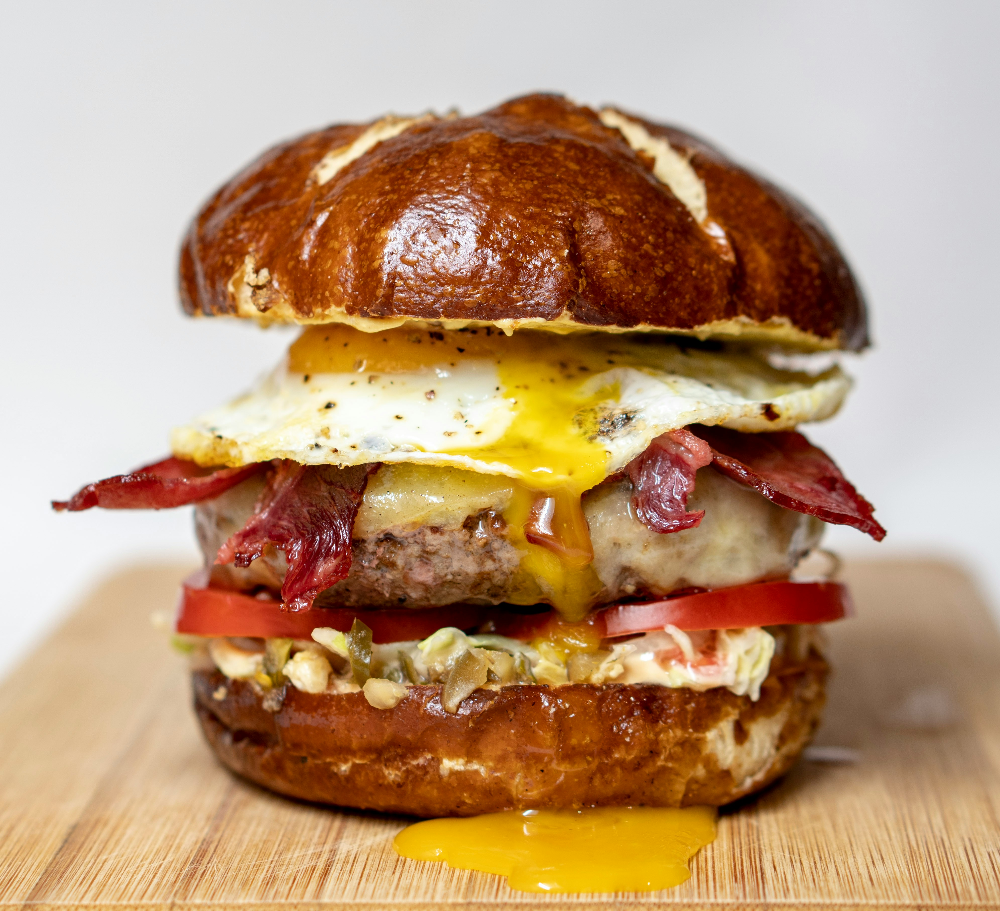

Unda Burger
Anday wala burger is a simple yet tasty street-style favorite loved by many. It is made by placing a fried egg
(anday) on a soft bun, often paired with a patty, chutney, ketchup, and fresh vegetables like onions and
cucumbers. Its affordable price and delicious, comforting taste make it a popular choice for a quick snack,
especially from roadside stalls.
Go Back